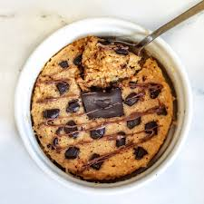

Protein Oat Cakes Recipe

Ingredients
- 2 cups oats
- 2 cups of milk
- 1 tsp baking powder
- 2 scoops salted caramel baking posder
- 1 cup of blueberries (frozen or non)
recipe
- Grab a bowl
- Put 2 cups of oats in a bowl and mix with 1.5 cups of milk
- Add baking powder, protein powder and blueberries
- Put in baking tray and bake in oven that's been preheated to 180c for 40min